- DAX25-20-02【書籍】 AI白書2019_第2章技術動向
- 2.1 総論（技術の全体像、マッピング）
- 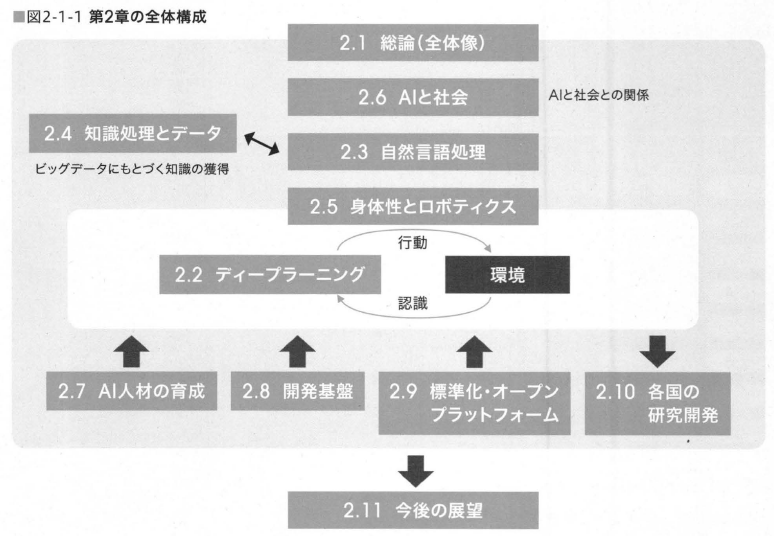
- 2.2 ディープラーニング
- 2.2.1 ディープラーニングの躍進
- (1) r眼の誕生」
- (2)知能の全体像
- 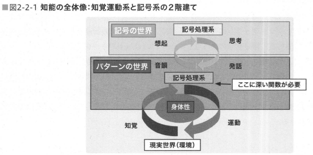
- これまでの人工知能における数十年の研究では大きな問題があった。環境中におけるパターンの処理が極めて弱かったことである。
- 2.2.2 ディープラーニングとは（特長、仕組みの概要など）
- 人間の神経回路（ニューロン）を模しているかどうかはもはや璽要ではない。ディープラーニングの要点は、深い関数による表現力の高さと、連鎖律（チェインルール）による勾配降下町こある。
- (1)ニューラルネットワークの構造
- 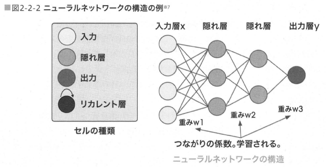
- (2)機械学習とは
- 機械学習における代表的な3つの学習の枠組みは、「教師あり学習」、「教師なし学習」、そして「強化学習」である。
- (3)機械学習からティープラーニングへ
- マシンラーニング系
- ドメイン（対象分野）の知識を持って取り組むことが大変重要である。そして、いちばん簡単な線形モデル（重回帰）から始まって、ロジスティック回帰、サポートベクター回帰、そして様々なアンサンブル学習の手法（学習器を組み合わせる手法）、例えばランダムフォレストやXGboostなどのマシンラーニング系の手法を使ってやってみる。
- 「ディープラーニング系
- 表現力の高い深い関数を用いるため、データと計算量さえ多ければ精度が上がるという特徴を持つ（もちろんドメインの知識も重要ではある）。ただし、ディープラーニングに適したデータは限定的で、すでにデータベース化されているものよりも、画像そのものや音声そのもの、（大量にある場合の）テキストなど、生データに近いデータの扱いに優れている。
- ドメインの知識、一般的な背景知識等を必要とする問題に対しては、それらの知識をうまく組み込むことが難しい。
- どうやってデータを取得するか、そのデータにどうやってアノテーション（ラベルやメタデータを与えて正解データを作ること）をするかがポトルネックになる。そして、最新の技術を使ってモデルを構築し、実際にやってみて、またデータの取り方から改良をしていくという、試行錯誤のサイクルを続けることになる。
- 「エンド・トゥ・エンド(end-to-end)学習」がある。端から端を一気通貫で学習するという意味である。
- (4) rティープラーニングX強化学習」：認識から運動の習熟ヘ
- (5) rティープラーニングx生成モデル」：画像の生成
- (6)次のステップヘ、未来の予測とプランニング
- 2.2.3 画像認識技術とその飛躍的進歩
- (1) CNN: 画像を認識するネットワーク
- ・ r畳み込み(Convolution)」
- ・「プーリング(Pooling)」

- 2.2.4 時系列データ処理への展開
- (1) RNN :時 系列テータを扱うネットワーク
- 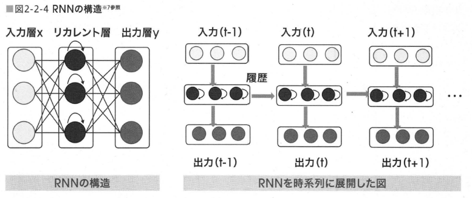
- (2) RNN/LSTMを用いた自然言語処理
- (3)ニューラル機械翻訳(NMT)
- (4)言語の意味理解へ向けて
- 言語の意味理解というのは、文から画像を生成し、また画像から文を生成することであるといえる。
- 2.2.5 最新の技術動向
- (1)深層生成モデル
- ディープラーニングの発展形の一つの大きな流れが、深層生成モデルである。深層生成モデルとは、生成モデルを深くしたもの、ということである
- (2)深層強化学習
- (3)深層強化学習の例(Q学習、DQN)
- 2.2.6 ディープラーニングを端緒とする人工知能の発展
- データをもとにして特徴量を抽出するところに最も大きな困難性があり、それが今、「現実的な方法で」「実際に」解けるようになっている。
- (1)人工知能とr身体性」
- (2)環境とのインタラクションで得られるr身体性」から記号に迫るアプローチ
- (3) r身体性」抜きに、大量のデータから直接の概念獲得や意味理解を目指すアプローチ
- (4)表現学習の手段としてのティープラーニング
- 2.2.7 ディープラーニングの計算原理と実装技術
- (1)ティープラーニングの原理
- 「深い関数を使った最小二乗法」ということができる。深い関数というのは、入力Xから出力Yまで、何段階か中間の関数を介する関数である。深い関数のほうが浅い関数よりも圧倒的に表現力が高い。
- 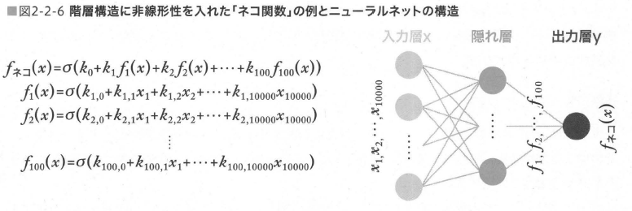
- (2)デイープラーニングの実装技術
- ① 行列演算による実装
- ② 勾配の計算手法
- ③最適化ルーチンと効率化
- 2.2.8 今後の展望
- 実現可能性の高い未来
- フェーズ1:デ ィープラーニングによる画像認識
- フェーズ2:眼 をもつ機械の誕生
- フェーズ3:翻訳が実用レベルに達する
- フェーズ4:言葉の意味理解・知識処理
- フェーズs:物理現象や社会現象のモデル化
- (1) 「モデリング」の自動化
- 現実世界の現象から何が重要かを見抜いていかにモデルを立てるかという部分である。そこが自動化できなかったために、重要な部分の作業はどうしても人間がやらなければいけなかったのだ。その突破口を切り拓いたのが、ディープラーニングである。
- (2)知能の原理の解明へ
- 「知能」という機能を実装した機械がヒト型ロボットである必要はないのだ。それこそが、本節で何度も強調してきた「眼をもつ機械」の実
- 2.3 自然言語処理
- 2.3.1 文書分類
- 2.3.2 言語の構造解析
- 2.3.3 言語資源
- これまで、主に機械学習にもとづく手法などを紹介してきたが、シソーラス（類義語辞典）のように、ある単語とある単語が意味的に類似していることを示す言語資源が存在する。英語の類義語情報を含む言語資源としてはWordNet※28が圧倒的に有名である。WordNetは、類義語関係、上位語一下位語関係、構成要素一被構成要素関係など、単語間の関係を提供している。互いに類義語関係にある単語からなる集合をsynsetと呼ぶ。
- WordNetを日本語へ移植した日本語WordNetも存在するが、もともと日本語に対して構築された分類語彙表※30、日本語語彙体系※31、EDR電子化辞書※32などがよく知られている。
- その他、様々な言語資源やコーパスが、言語資源協会※33、ALAGIN※34、情報学研究データリポジトリ※35などで公開されている。
- 近年目覚ましい発展を見せたのが、単語分散表現である。これは、コーパスから機械学習により得られた単語のベクトル表現である。
- 多くの言語資源が自然言語処理技術を用いて構築され、再び自然言語処理に利用されている。
- 2.3.4 テキスト生成を伴う研究課題
- 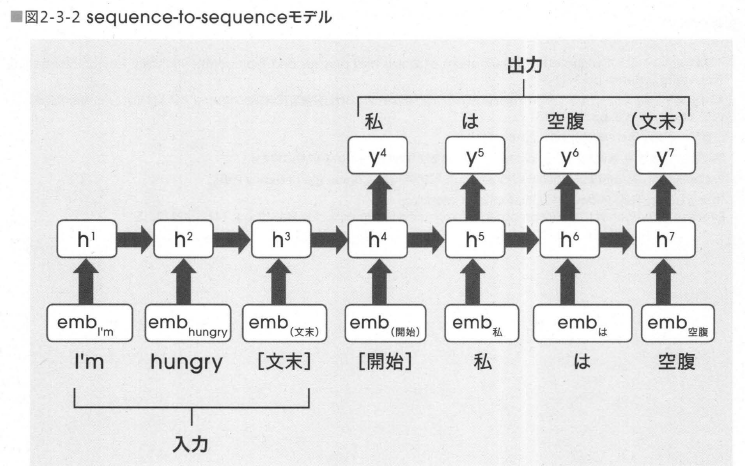
- 2.4 知識処理とデータ
- 概要
- AIが有意な結果をもたらすには、背景となる大量のデータ、大量の知識が必要になる。
- データを生データとすると、ここでの知識とは、データを整理、加工・抽象化して形式を整え体系化し、推論により組み合わせて、有意な結果を導出する源になるものと捉えることができる。
- しかし、データと知識の境界は必ずしも明確であるわけではなく、特に昨今のビッグデータ時代には、データと知識の中間的なものも増大している（例えば自然言語テキストデータ） 。
- 2.4.1 AIとデータ及び知識の関わりの経時的俯瞰
- 知能(Intelligence)には、①記号化された知識とその（推論／思考による）活用の側面と②知覚系に相当するパターンの認知（あるいは認識／識別）による側面とがある（他にもいくつかの側面があるが）。
- 以上に述べたAIは主に① の（記号化された）知識の活用の側面であるのに対し、②の知能の側面はAI分野とも言えるが、やや異なる面があるパターン認識の分野として研究、発展してきた経緯がある。
- 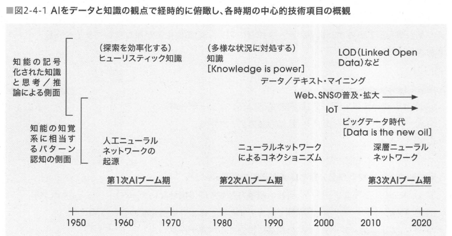
- 2.4.2 ビッグデータの状況と課題
- ビッグデータは単に量が大きいというだけでなく、次のような3つのVで表される特徴をもつ。
- 1) Volume (データ量）：量が大
- 2) Velocity (速度／更新頻度）：データの生成・収集・分析の速度、頻度が高い
- 3) Variety (多様性）：構造化データだけでなく、テキスト／画像・映像／音声／センサー情報等の多様な非構造化データも含む
- 利活用が図られているのは（必ずしも網羅しているわけではないが）以下のような領域
- 健康・医療、移動・交通、金融・保険、小売、ターゲット広告、流通・運輸、サービス業、製造業、一次産業、バイオ・製薬、化学・材料、旅行、教育サービス、エネルギー・インフラ、防災・防犯、公共・行政
- 企業の保有するデータは、
- a-1)インターナル・データ（社内のオペレーション・データ）
- a-2)エクスターナル・データ（社外の願客データ）
- に大別できる。
- 別の観点で、次のような分類の意識も必要である。
- b-1)エッセンシャル・データ（自社の競争力として外に出せないデータ）
- b-2)業界シェア・データ（業界等でシェアすることにより価値を高められるデータ）
- b-3)パブリック・データ（公共の利益に役立てるべきデータ）
- また、Velocity(速度／更新頻度）の点から、次の分類もある。
- c-1)変化のない／少ないデータ
- c-2)更新頻度が高いデータ
- 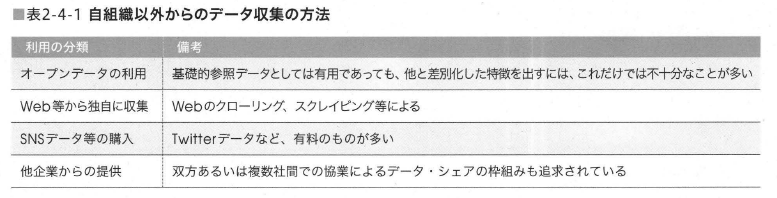
- 研究用途に企業等から提供されているデータセットがあり、例えば国立情報学研究所(NII)では以下のようなデータセットを研究用に公開している※3¥
- -Yahoo! データセット(yahoo!知恵袋データ）
- -楽天データセット（楽天市場商品データとレビューデータ、楽天トラベルの施設データとレビューデータなど）
- -ニコニコデータセット（ニコニコ動画コメント等データ）
- -リクルートデータセット（ホットペッパービューティーデータ）
- -クックパッドデータセット（レシピ・データなど）
- -LIFULL HOME'Sデータセット（賃貨物件データなど）
- -不満調査データセット
- -Sansanデータセット（サンプル名刺データ）
- -インテージ・データセット0-sspデータ；TV、PC、スマホでのメディア接触データなど）
- -その他
- オープンデータについて触れておくと、
- 官民データ活用推進基本法(2016年12月成立・施行）において、
- 国及び地方公共団体はデータのオープン化への取組みが義務づけられた。これによりオープンデータ化は進んできており、社会問題の解決、新サービスヘの利用による経済活性化が期待されている。
- オープンデータの重点8分野（電子行政、健康・医療・介護、観光、金融、農林水産、ものづくり、インフラ・防災・減災、移動）が定められ、整備が進められている。
- 必要なデータは利用すべきである（データカタログサイト※41によると2018年7月現在で21,647データセットが公開されている）。
- 「共通語彙基盤」
- 情報処理推進機構(IPA)はオープンデータの利活用性の向上を目指して、「共通語彙基盤」を整備している※42
- ①プライバシー問題
- 日本では改正個人情報保護法が2017年5月30日に施行
- ◇個人情報の定義の明確化
- ・「個人情報」とは氏名、生年月日、その他の記述等により個人が識別できるのに加え、以下の個人識別符号も含む。
- ・「個人識別符号」とは、身体の一部の特徴を表す符号(DNA、顔、虹彩、声紋、指紋、手指の静脈など）と、サービス利用や書類において対象毎に割り振られる符号（公的番号、旅券番号、マイナンバー、住民票コード、免許証番号、基礎年金番号、各種保険番号など）。
- ・「要配慮個人情報」とは、人種、思想、信条、政治的見解、病歴など、社会的差別を受ける恐れのある個人情報。本人の同意を得なければ取得できない。
- ・「匿名加工情報」は、特定の個人を識別できないように個人情報を加工して得られる個人に関する情報。本人同意やオプトアウト手続きなしに第三者に提供できる。受領の第三者は、本人識別を目的として他の情報と照合してはならない。
- ◇個人情報の第三者提供
- ①目的外利用や第三者提供には本人同意が原則
- ②匿名加工情報にすれば本人同意なしで第三者提供可
- ［提供者の義務］
- ・提供先に関する記録の作成と一定期間の保存
- ・復元に繋がる情報の安全管理措置
- ．匿名加工情報に含まれる情報項目の公開
- ［受領者側］
- ・提供の記録の作成と一定期間の保存
- ・本人識別のために他の情報と照合することを禁止
- （業務の委託、事業の継承、共同利用は第三者利用に当たらない）
- ◇外国の第三者への提供制限
- 外国の第三者が以下に該当する場合、本人同意を得て提供できる
- ・日本と同等水準にあると認められる個人情報保護の制度を有している外国（個人情報保護委員会で定める）
- ・個人情報保護委員会規則で定める基準に適合する体制を整備している外国企業
- 医療分野に関しては研究開発の促進に資するため、次世代医療基盤法(2017年4月成立、2018年5月施行）が制定された。
- この法律では、改正個人情報保護法で要配慮情報に該当する医療情報も、オプトアウト方式により第三者提供を可能としている。
- プライバシー、個人情報保護についての規制は各国で異なるが、EUは最も厳しい部類になる「一般データ保護規則(GDPR)」を2018年5月に施行した。
- GDPRの主目的は、市民と居住者が自分の個人データのコントロールの主権を取り戻すことであり、国際的ビジネスの規制を定めることである。
- 以下にいくつかの要点を抜粋して記す。
- ・名前、識別番号、住所、メールアドレス、IPアドレス、クッキー、クレジットカードやパスポート情報といった個人データの収集には個人の明確な同意が必要。
- ・償いを済ませた後の犯罪歴といった過去のデータの消去を求める「忘れられる権利」を認める。
- ・収集された個人行動や購買の履歴等の個人データを、個人が自分の意思で異なるサービス提供者に移転できるデータ・ポータビリティの権利。
- ・プロファイリングに服さない権利(GDPRにおけるプロファイリングとは、個人の側面＜業務実績、経済状態、健康、嗜好、興味、信頼、行動、所在または移動＞の分析や予測をするためになされる個人データのあらゆる形態の自動的な処理） 。
- ・EU規則と同じレベルの規則を課しているという十分性が認定されない限りEU市民のデータをEU域外に持ち出せない（日本政府はEUからこの十分性を認める合意を得ている） 。
- ・違反した場合には巨額の制裁金（全世界のグループ売上高の4%か2000万ユーロのいずれか高い方） 。
- ②テータの共有・共用の課題と、情報銀行、MyDataの動き
- 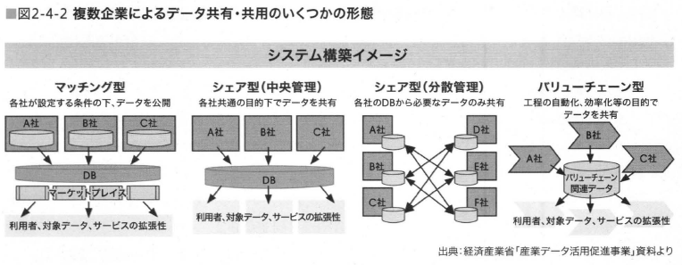
- 民間では、一般社団法人データ流通推進協譲会※“で取組みが行われている。
- 上記は企業間のデータ共有・共用の枠組みであるが、個人から（同意を得て）個人データの預託を受け、個人が許可したデータを必要とする企業に仲介、提供する「情報銀行」も課題の検討と並行して、具体的事業も始まっている。
- この場合の個人データは以下のようなものが対象になる。
- 購買データ、移動データ、健康データ（装着センサーデータ）、食事データ、WebやSNSアクセスデータ、金融データなど。
- データを提供した個人は対価（ポイントや特別なサービスのこともあり）を受けることができる。
- 政府もこの動きを推進しており、データ流通、利活用促進の枠組みとして期待される。
- 情報銀行は「個人が自分の個人データのコントロール権をもつ」ことを前提とし、その実現が図られたときにデータの範囲は大になる。この権利はEUのGDPRの中心理念であり、具体的にはデータ・ポータビリティの権利と関わる。EUのGDPRをはじめとする「個人が自分の個人データのコントロ
- ール権をもつ」との思想は最近ではMyDataとも称されている。
- MyDataと称するイベントは最初2016年にヘルシンキで行われ、日本でも2017年、2018年に行われた。
- このMyDataの思想に深く関係するのがPersonalData Storage (PDS)であり、個人が自分の個人データを自分で保持し管理するストレージである。情報銀行とも深く関係する個人データの管理形態であり、情報銀行は個人から同意を得たPDSの個人データの預託を受けることになる。
- このように、ビッグデータの収集は各企業で進むのと並行して、企業間、個人一企業間のデータ流通の枠組みも整備が進もうとしている。
- ③テータバイアス問題
- 人間に代わってデータから学習したデータ駆動型意思決定が行われるようになることで、収集したデータに内在する（不当な）偏りや偏見が判定に影響することが起こりうる。これは、データバイアス問題と呼ばれる。
- 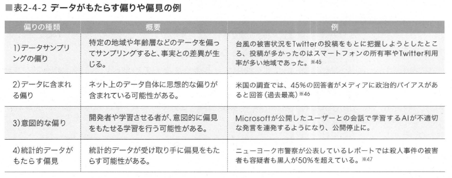
- ④ 学習に大量データを要する課題
- DNNの学習には大量の訓練データを要することが、実用上の課題になることが多い（教師付き学習用には判定ラベルく教師データ＞をもつ訓練データを必要とするが、ラベル付けを人手で行わなけ
ればならない場合は大変である）
- 2.4.3 知識を巡る状況
- ビッグデータ時代において、AIで価値を生み出すソースとしてデータの注目度は高まっている
- （記号的）知識への注目度は相対的に下がっている感もあるが、前述のように知能の思考／推論の側面を支える知識は重要であり、着実な歩みを見せていると言える。
- WebやSNSではテキスト部分は非構造化データでもあるが、テキストマイニングにより知識を抽出して利活用が図られるので、データと知識の中間的な位置になると言えよう。
- ここではこのようなものも含めて、知識に関する状況を記す。
- Webは情報共有、流通のプラットフォームとして登場し、1990年代半ばからのその普及と拡大は検索エンジンを伴うことで、情報環境に革命的変化をもたらした。
- 2000年代になると、BlogやSNSも登場し、いわゆるCGM(Consumer Generated Media)によって、各個人のバラエティに富む情報発信も増大した。
- 知識の点で注目すべきは2001年に始まった共同執筆のWebオンライン百科事典であるWikipediaである。
- 2018年7月時点で英語版は記事数で567万、日本語版で記事数111 万となっている。内容は中立的観点から記述すべきとの方針がとられており、情報の質も2005年の百科事典エンサイクロペディア・ブリタニカとの比較で大差はなかったという調査結果も示された（その一方で、査読制度がなく、問題ある記述はコミュニティでの管理に委ねられているので、信頼性の担保が弱い部分もあるとの意見もある）。
- Wikipedia情報をコンピューターによる意味把握を容易にするLOD (Linked Open Data)形式にしたのがDBpedia※48である(LODについては後述する） 。
- Webの発明者であるTimBerners-Leeは1999年にセマンティックWebを提唱した※49。通常のWebは人が読む文書情報をHTML形式で表すのに対し、セマンティックWebはコンピュータ(機械）が意味内容を判読できるようにすることを目標とする次世代Webの構想である。
- セマンティックWebの上位目標(Proof、Trustなどあり）は高く、研究開発や標準化は継続しているものの、なかなか普及するまでに至っていない。
- セマンティックWebの甚礎となるデータ記述形式はRDF(Resource Description Language)であり、これにもとづいてコンピューターに意味が判読でき、Webのようにオープンにアクセスできるようにしたのが、2007年からLODと呼ばれるようになったデータのWebである。データであるものの、概念や事物間を豊富な関係で結んでおり、知識化されているとも言える。
- 記述形式のRDFは主語(subject)、述語(predicate)、目的語(object)の三つ組(triplet)でデータ／知識を表す。図2-4-3にRDFの例を示すが、下がグラフ表示であり、上がNotation3(N3)というXMLをベースとするRDFのシリアル化記述形である（他のシリアル化記述形も存在する） 。
- 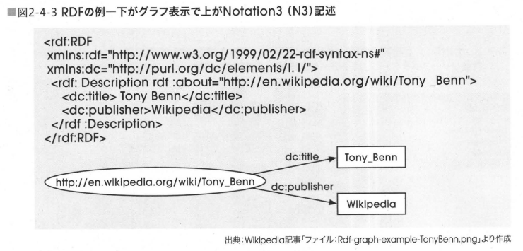
- LODは2018年6月時点で1,205データセットが公開されており、総体としてLinkedOpenData (LOD) Cloudと呼ばれる。
- どのような対象領域があるかと言うと、大別すると以下のようなサブドメインである。
- Cross-Domain (領域間共通）、Geography(地理）、Government(政府）、LifeScience（生命科学）、Linguistics(言語学）、Media、Publication(出版）、SocialNetworking、User-Generated (ユーザー生成コンテンツ）
- LOD全体では1,000データセット以上にもなり込み入ってしまうので、図2-4-4にはLinguisticsサブドメインのLODを例示する。各ノードがデータセットを表し、関係づけがあるノード間にリンクが張られている。
- 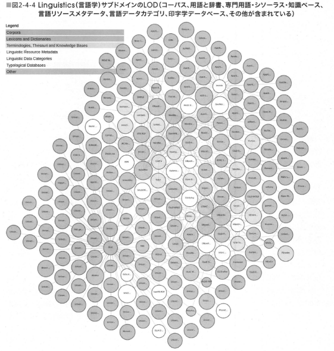
- 代表的で最も規模が大きいLODはDBpediaであり、2018年で英語版は458万項目を含んでいる。
- Wikidata
- 主にWikipediaのInfobox(右上のボックス部分）の情報がRDF形式で記されている(DBpediaJapaneseも存在しているが※51、規模は大きくはなく範囲も限定されている）。
- WikipediaをもとにしたLODにWikidata※52も存在する。DBpediaがWikipediaの主にInfoboxから情報抽出しているのに対し、WikidataはWikipediaの内容に関して共同編集されたRDFを集積している(DBpediaはBerlin自由大学とLoipzig大学で始められ2007年に公開されたが、WikidataはWikimedia財団で2012年から開始された）。
- WordNet
- WordNet※” は（英語の）上位・下位語、同義語等を定義した語彙データセットだが、このWordNetもLODとして公開されている（日本語WordNet*54も存在し、LOD化が図られている） 。
- SPARQL
- RDFのクエリ言語としてSPARQL※” があり、RDFにより記述されたLOD空間は、SPARQL Endpoint (LODの標準検索API)からSPARQLによって検索可能である。
- なおここではLODの記述形式としてRDFを記したが、RDFはオープンでないプライベートな三つ組構造で関係付けられたデータ／知識の集合を表すのにも用いられる（その場合はLinked Dataと呼ばれる） 。RDFという規格化された表現形と、それに付随する各種ツールも利用できることが利点となる。
- 知識グラフ(Knowledge Graph)
- RDFではデータ／知識は三つ組(triplet)及びノードと関係リンクによるグラフで表現される。同じようにデータ／知識をグラフ表現したものであるが、RDF表記は用いない知識グラフ(Knowledge Graph)がある。
- キーワード検索の検索エンジンはWeb情報空間利用に不可欠のツールであるが、雑多な情報の選別など、アクセスには不十分な点も多い。
- GoogleのKnowledgeGraphは、Web等から抽出したオブジェクト（事物）間の関係を意味ネットワーク形（オブジェクトをノードとし、ノード間を意味的関係を付したリンクで結んだグラフ）で知識化して表したものである。
- これにより単なるキーワードでなく、オブジェクト間の意味的関係も考慮した検索を可能にしている。
- このGoogleKnowledge Graphは2012年の発表時点で5.7億件のオブジェクトと、それらオブジェクト間の180億の意味的関係を有していた。2016年には700億件のファクト関係に拡大しており、検索と共に機械翻訳の品質向上にも利用されている。
- これはGoogleKnowledge Graph Search API※56から検索で利用することができる。
- ConceptGraph
- 2016年に発表があったMicrosoftのConceptGraphは、テキスト理解に必要な概念をやはりノードとし、ノード間を確率を伴う関係で結ぶグラフとしている。この概念ノード数は540万程であり、テキスト文の常識に照らした確率的解釈に役立つ。
- Microsoftはこの他にもGoogleKnowledge Graphのような知識グラフSatoriも、検索エンジンBing用や対話システム用に開発している。Satoriは2012年時点で3.5億項目、8億の関係記述をもつ。
- EntitiesGraph
- FacebookもEntitiesGraphという仮称で、膨大な利用者のプロファイル情報をノードとそれらを関係のリンクで結ぶグラフ形状のデータ／知識ベースで管理して活用している※570
- 「HierarchicalIdentify Verify Exploit ;H IVE
- データが膨大になることで、グラフ形状のデータ／知識ベースの処理の高速化も、解決すべき課題になっており、米国防高等研究計画局(DARPA)は、「HierarchicalIdentify Verify Exploit ;H IVE」と呼ばれる高速化の研究に取り組んでいる※580
- 第1次AIブーム
- 第2次AIブーム
- 知識ベースはルールを主体にして、一部は構造をもつフレーム、論理、制約等の形態で知識が集積
- 制約は知識の基本的なものであり、随所に使われ、充足可能解あるいは最適解を導出するアルゴリズム（一種の推論）が使われる。
- フレーム名のオブジェクトが関係をもつ要素をスロットして表すフレームの機能は、前述した三つ組(triplet)表現をとるRDFやその類似形で代替されてきている感がある。
- データ利活用の観点から
- オープンデータは誰でも自由に活用できることがその骨子であり、技術の民主化、すなわちLODとその活用技術の普及をボトムアップに応援する活動も多く存在する。
- 代表的なものはLODチャレンジJapan実行委員会が主催する、「LODチャレンジ」であり、コンテスト形式で評価し合うイベントを通じて、LODの技術情報を発信するとともに、データやアイデアに関する情報交換や共有を行うコミュニティづくりが行われている※6
- 一方、データの重要性が注目されている中でいわゆる知識ベースの形態や実体では、LODなど標準化されオープン化されているものは把握できるが、企業内のもの等は様々な形態であり、全体像を把握しにくくなってきている。
- 先にも述べているように、深層学習(DL)等の機械学習によって得た、認識／識別の用途に代表的に使われる学習済みDNN等は一種の知識であり、これらの獲得した知識の流通・共有の枠組みは、データの流通・利用と並行して今後の課題である。
- 学習済みDNNについては、訓練データとは違うが類似性のある新たな認識対象に対して、転移学習による利用が可能ではある。
- しかし、実際に転移学習に利用されるのはImageNetで学習されたVGG16を代表とした限られた範囲である。
- 学習済みDNNをはじめとするデータから学習によって得た知識の広範囲な利用を可能にする枠組みは、適用範囲や品質の保証をどうするかなど、今後の課題である。※61
- 2.5 身体性とロボティクス
 後日入力
後日入力- 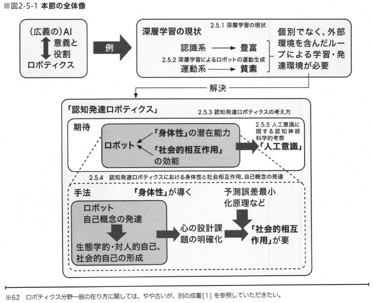
- 2.5.1 深層学習の現状
- 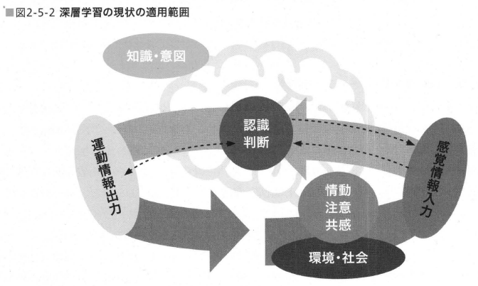
- 2.5.2 深層学習によるロボットの運動生成
- (1)視覚運動方策のエンド・ツー・エンド学習
- 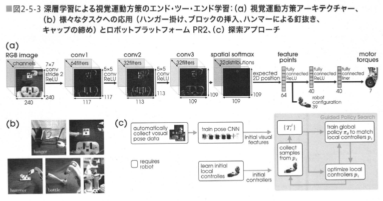
- (2)長短期記憶構造と報酬関数を組み込んだ深層学習による時系列画像の予測と行動生成
- 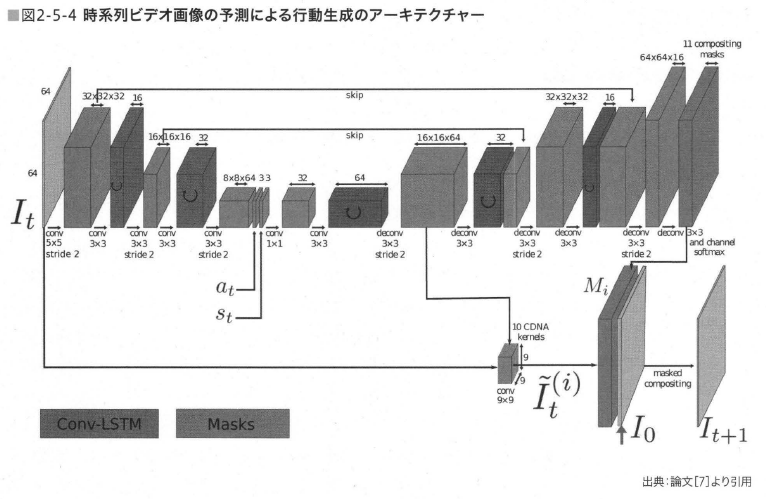
- (3)直接教示バイアスによる折り畳みタスクの深層学習
- 2.5.3 認知発達ロボティクスの考え方
- (1)人工物との共生社会への思想的背景
- 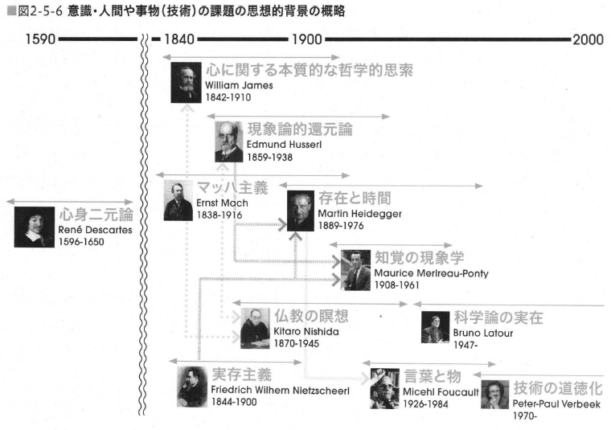
- 2.5.4 認知発達ロボティクスにおける身体性と社会的相互作用、自己概念の発達
- (1)自己と他者の概念を確立する発達過程
- 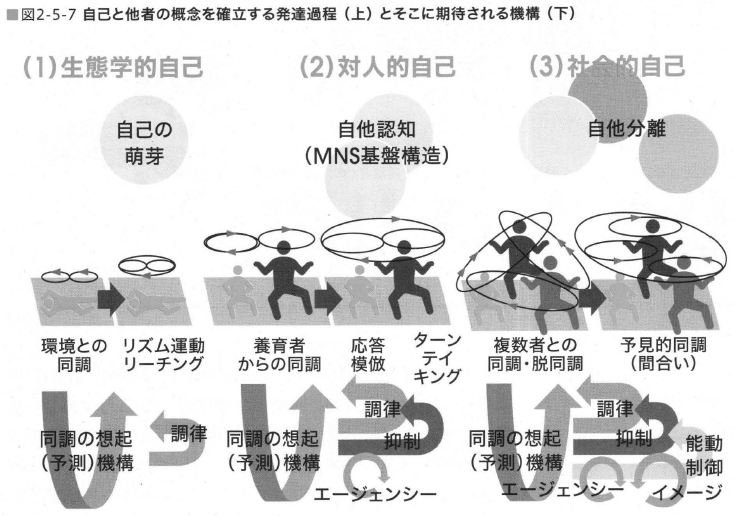
- 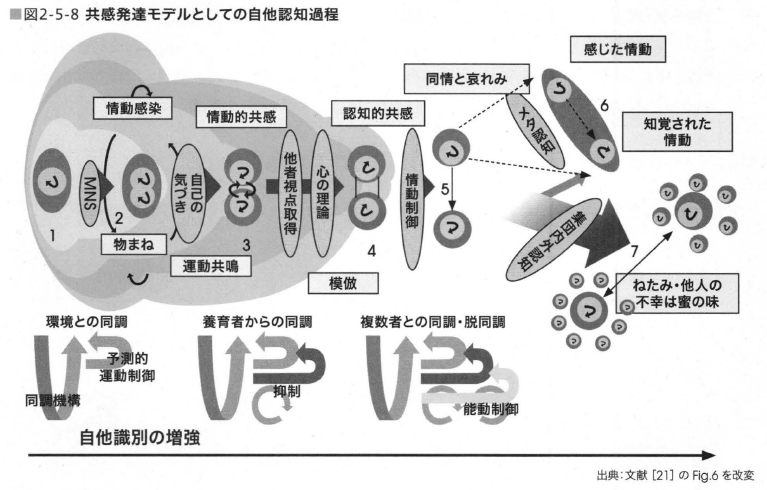
- (2)身体表現の獲得
- ① 身体表現の生物学的原理
- ②身体表現の認知発達ロボティクスアプローチ
- (a)自己身体の発見
- (b)道具使用による適応的身体表現
- (c) VIPニューロンの働き：頭部身体周辺空間の表現の獲得
- ③身体表現の課題
- 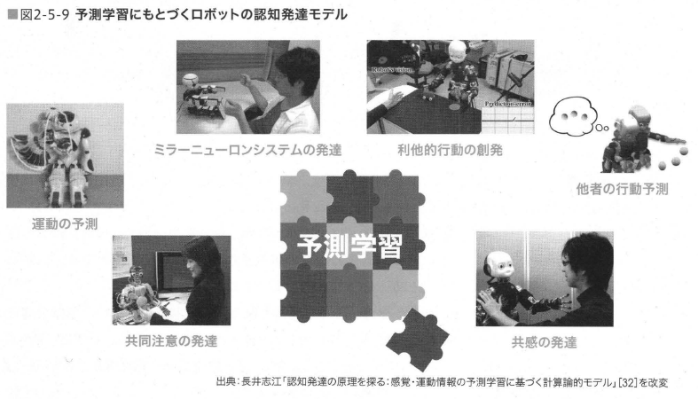
- (3)予測誤差最小化原理による社会的相互作用創発
- 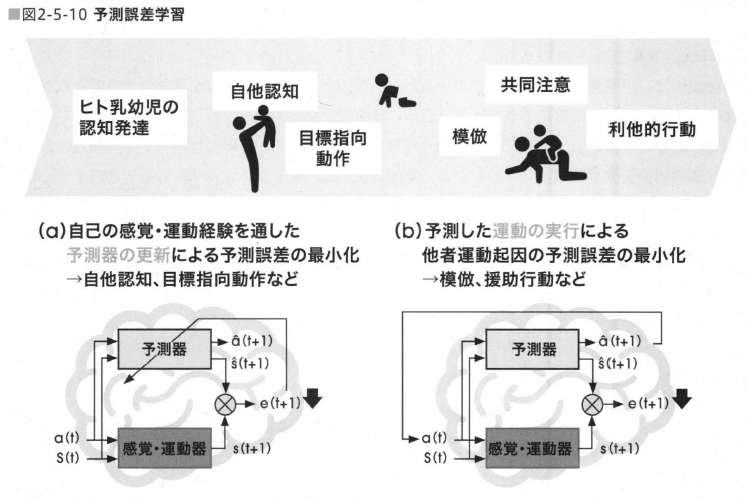
- ① MNSの発達
- 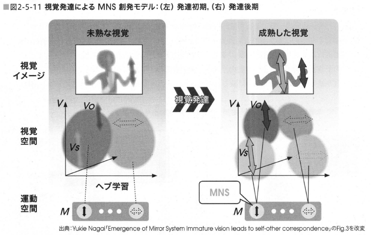
- ②他者視点取得の困難さ
- ③他者運動に起因する予測誤差の最小化による援助行動やターンテイキングの創発
- 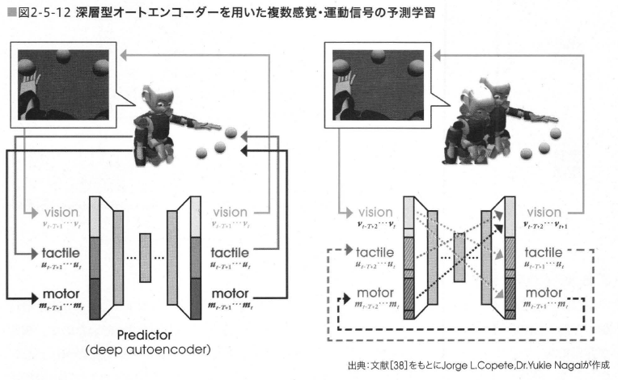
- 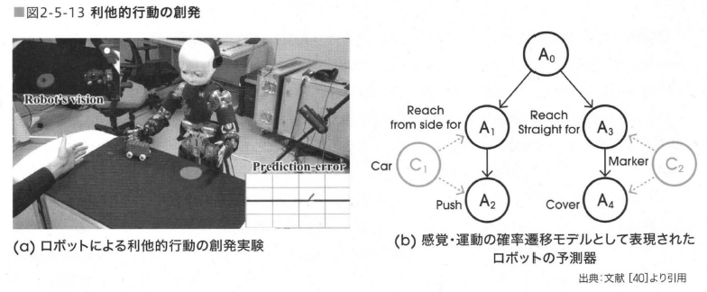
- 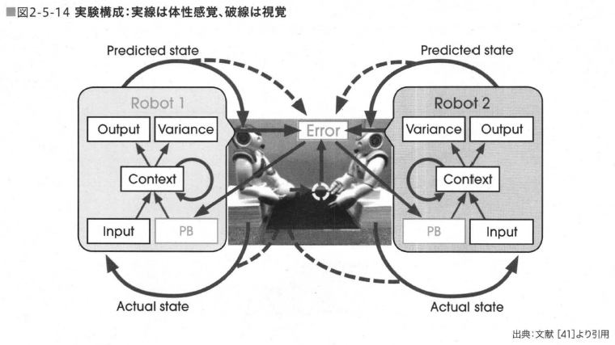
- 2.5.5 人工意識に関する認知神経科学的考察
- 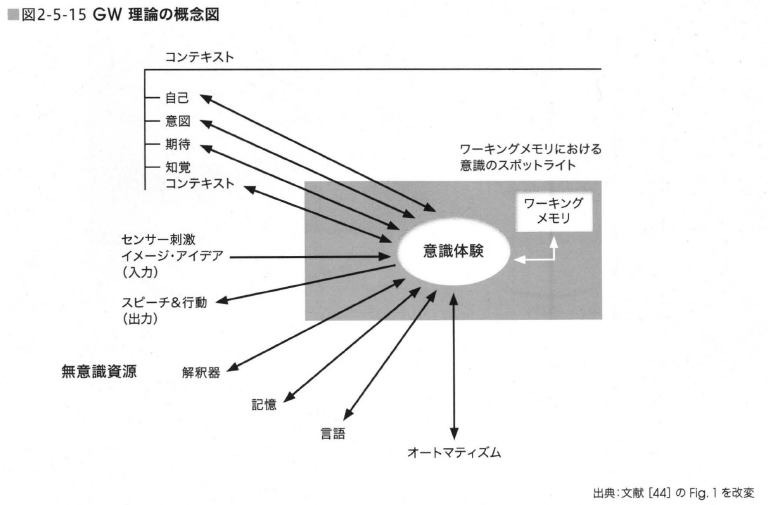
- 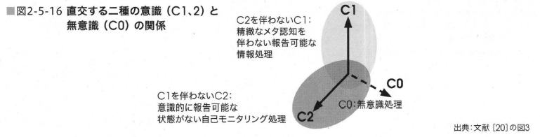
- 2.5.6 おわりに
- 1. 現在の深層学習を徹底的に突き詰め、ビッグデータをベースにend-to-endの学習機構により、意味をグランドすることなく、使えるシステムをどんどん社会に出していき、有用なツールとし磨きをかける。
- 2. 本節で論じた身体性、最後に言及した痛みの神経回路をロボットに賦与することで、MNSを通じた共感行動生成、さらには、倫理観の創出など、人間自身の認知発達過程のミステリーを構成的に解きほぐすことで、よりグランドした人工システムの設計から実証実験を繰り返す。
- 2.6 AIと社会
- 2.6.1 社会システムデザインの必要性
- インターネットの誕生は社会の在り方を根本的に変えつつある。広範囲の情報を即座に入手できるということが利便性だけではなく、情報処理技術(IT)の適用範囲を飛躍的に増大させている。しかしながら、ITの潜在能力はフルには発揮されていない。今後はこれにAI技術が加わり能力はさらに向上することが期待されているが、使う側が全く追いついていないのが現状である。
- 2.6.2 社会的意思決定システム
- 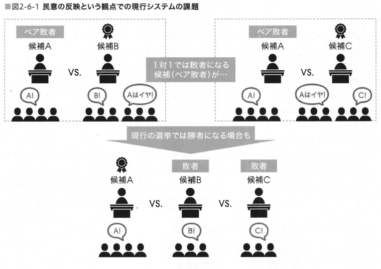
- 技術は可能性を広げるが、それらの可能性の中から良いものを選ぶには技術以外の判断基準が必要で、社会学あるいは社会の制度設計をしている人たちが社会デザインに参加すべきである。
- 2.6.3 会社組織と働き方
- 企業ではAIを新しいサービスや製品に取り込むことを検討しているが、企業の仕組みそのものに適用しようとする例はまだ少ない。

- 2.6.4 経済システム
- インターネットの出現によって、サービスを提供するためのコストがどんどん安くなっている。
- フィンテックもその一つである。IoTによるC2C基盤がUberやAirbnb等の「共有型経済」を実現し、そこでは消費者の既存資産（家や車）やインターネットを活用しているためサービスコストが限界的にはゼロに近づくような社会ができてくる。
- それによって今の資本主義から共有型の経済に変わることが必然になるという主張がある[7]。インターネットですべてのものを結び付ける(IoT)ことによって、シェアリングエコノミーが可能になる。
- 経済の仕組みが根本的に変わるかもしれない。
- 2.6.5 モビリティ
- 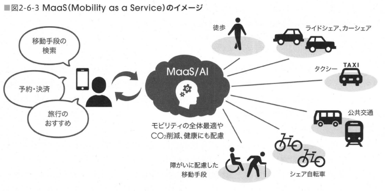
- 2.6.6 医療
- 2.6.7 教育
- 今後はCBT(Computer-Based Test)が普及すると考えられる。問題の提示と採点をコンピューターが行うというだけでなく、受験者のレベルに合った問題を提示することにより、従来より正確に受験者のレベルを判定できるようになる。
- IRT(Item Response Theory)を使い、解答を見ながら受験者のレベルに近い問題に絞り込んでいく。
- 現状では無理だが小論文の採点もできるようになるだろう。
- IRTは教育にも使える。知識の全体系をAIが把握していて、学習者に最適なレベルの知識を与えていくのだ。昔あった「プログラム学習」のAI版である。
- AIなどの技術発展が加速していくと専門知識もどんどん更新される。あるいは新しい専門分野ができたり、逆に特定の専門分野がなくなってしまうということも起こるだろう。
- 大学で身につけた専門知識で一生仕事ができる時代はすでに過去のものである。
- 一方でAIが専門知識を学ぶことを考えると、人間が身につけなければならない知識とAIに頼れば良い知識の区別が必要になる。
- 基本的には専門知識は（適宜必要な知識を人間に教育することを含め） AIに任せ、人間はリベラルアーツを身につけることになろう。
- リベラルアーツとはギリシャ・ローマ時代に端を発し、市民であるために必要な教養として教えられた文法、修辞学、論理学、算術、幾何学、天文学、音楽の7科目のことである。
- 参考文献[8]は現代の教養（リベラルアーツ）として7科目（宗教、宇宙、人類の旅路、人間と病気、経済学、歴史、日本と日本人）を提案している。現在はこれに「情報技術」を加えねばならない(7つに収めるなら、最後の「日本と日本人」を歴史に入れればいい）。
- このように必要なリベラルアーツは時代とともに変わるが、重要なのはこれらが考え方の枠組みを作り上げるものであって、個別の専門知識ではないということである。
- 従ってこれらの科目は(AIではなく）人間が教えなければならない。
- 2.7 AI人材の育成
- 2.7.1 AI人材育成の全体イメージ
- 経済産業省の2016年度調査「IT人材の最新動向と将来推計に関する調査結果」
- 、今後特に大幅な市場拡大が予想される「ビッグデータ」、「IoT」、「人工知能」を担う人材（先端IT人材）については2020年に約4.8万人不足するという予測が出されている。
- IPAが2017年度に実施したアンケート
- AIベンダー側の「AIビジネス推進上の課題」として「自社にAIに関する人材が不足している」がトップとなっている（第5章参照） 。
- 全般的に人手不足である状況に加え、新しい技術・知識をすることから、AI開発現場におけるAI関連人材の獲得は急務と想定される。
- 2017年6月に閣議決定された「未来投資戦略2017
- Society5.0に向けた横割課題の一つとして「教育・人材力の抜本強化」が挙げられており、AIやデータ活用を含む「IT力」により目指すべき社会像を実現するための項目が示されている。
- 2018年6月に閣議決定された「未来投資戦略2018
- 「AI時代に対応した人材育成と最適活用」として、学校教育におけるAI・データ活用を含むIT人材の育成などの施策がさらに提言されている（表2-7-1)。
- 未来投資戦略2017/2018における人材関連項目
- 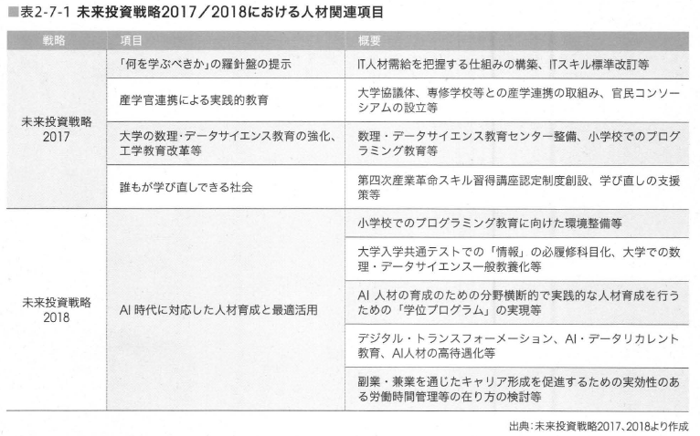
- 未来投資戦略2017
- 「何を学ぶべきか」の羅針盤の提示
- IT人材需給を把握する仕組みの構築、ITスキル標準改訂等
- 産学官連携による実践的教育
- 大学協議体、専修学校等との産学連携の取組み、官民コンソーシアムの設立等
- 大学の数理・データサイエンス教育の強化、工学教育改革等
- 数理・データサイエンス教育センター整備、小学校でのプログラミング教育等
- 誰もが学び直しできる社会
- 第四次産業革命スキル習得講座認定制度創設、学び直しの支援策等
- 未来投資戦略2018
- Al時代に対応した人材育成と最適活用
- 小学校でのプログラミング教育に向けた環境整備等
- 大学入学共通テストでの「情報」の必履修科目化、大学での数理・データサイエンス一般教養化等
- Al人材の育成のための分野横断的で実践的な人材育成を行うための「学位プログラム」の実現等
- デジタル・トランスフォーメーション、Al・データリカレント教育、Al人材の高待遇化等
- 副業・兼業を通じたキャリア形成を促進するための実効性のある労働時間管理等の在り方の検討等
- 出典：未来投資戦略2017、2018より作成
- 2018年6月に閣議決定された「統合イノベーション戦略」
- 「AI技術」の目指すべき将来として、
- ・これからの「読み・書き・そろばん」であるAI技術を使いこなすITリテラシーを誰もが持ち、ヒューマンフレンドリーなAI技術を活用することで、ニーズに合った物・サービスの提供、病気にならないヘルスケア、自由で安全な移動等を実現
- ・サイバーセキュリティが確保され、AI技術の社会受容が進み、産業から生活まで様々な分野で活用されることで、質の高い新たな雇用やサービスを創出が挙げられており、
- そのための「人材基盤の確立」として、以下の目標が掲げられている。
- ・2025年までに先端IT人材を年数万人規模、IT人材を年数十万人規模で育成・採用できる体制を確立（関係府省庁の施策での育成規模を2018年度中に設定）
- ・2032年までに初等中等教育を終えたすべての生徒がITリテラシーを獲得
- 上記を整理すると、AI・データ関連人材の育成には、スキル標準の整備によりスキルセットやキャリアパスを明確にしつつ、
- ・初等中等から大学までの課程における一般教養としての位置づけ
- ・産学官連携による産業ニーズを踏まえた学校教育
- ・高度な研究開発プロジェクトによる場の提供
- ・社会人のAI・データ人材への学び直しやリカレント教育
- などの育成システムの充実を図る必要がある。
- また、産業へのAI導入を推進するためには、産業・自社特有の課題を洗い出したり、データを収集・活用したりするためのユーザー企業担当者のAIリテラシーも重要と考えられる。
- 図2-7-1に全体イメージを示す。
- 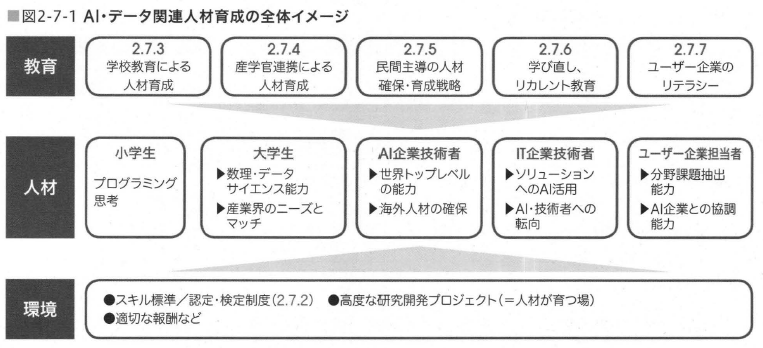
- 2.7.2 スキル標準／認定・検定制度
- (1) IPA riTSS+ (プラス）」
- 2017年4月には、第4次産業革命に向けて求められる新たな領域の“学び直し”の指針として「ITSS+(プラス）」を策定している。
- 「ITSS+」は
- 「データサイエンス領域」及び「セキュリティ領域」を対象とした形で2017年4月に公開、
- 2018年4月には「IoTソリューション領域」及び「アジャイル領域」を追加している。
- ITSS+のうち、
- AIに関連する「データサイエンス領域」は、企業等の業務において大量データを分析し、その分析結果を活用するための一連のタスクとそのために習得しておくべきスキルを取りまとめたものであり、
- タスクはIPAと「一般社団法人データサイエンティスト協会スキル委員会（委員長：安宅和人ヤフー株式会社CSO)」の協業で策定している。
- (2)一般社団法人日本ティープラーニング協会rG検定/E資格」
- 日本ディープラーニング協会(2017年6月設立）は、
- 「ディープラーニングの基礎知識を有し、適切な活動方針を決定して事業応用する能力を持つ人材」すなわちディープラーニングを含むAIの知識・リテラシーを持ったビジネスサイドの人材と、
- 「ディープラーニングの理論を理解し、適切な手法を選択して実装する能力を持つ人材」すなわちエンジニア人材
- の双方の育成が必要との考えから、それぞれについて「G(ジェネラリスト）検定」「E(エンジニア）資格」なる試験を開催している。
- G検定の第1回試験結果は2018年1月に発表され、1,448人の受験者のうち、823人が合格している（合格率56.8%)。G検定とE資格にはそれぞれシラバスが定義されており、Web上で以下のとおり公開されている（表2-7-2、表2-7-3)。
- ■表2-7-2G検定のシラバス(2018)
- 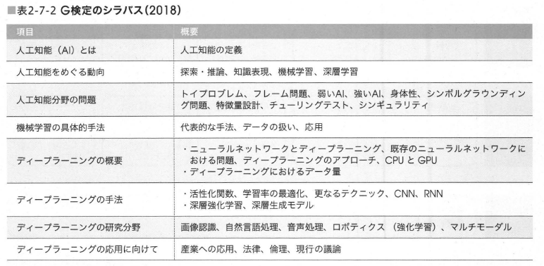
- 人工知能(Al) とは
- 人工知能の定義
- 人工知能をめぐる動向
- 探索・推論、知識表現、機械学習、深層学習
- 人工知能分野の問題
- トイプロプレム、フレーム問題、弱いAl、強いAl、身体性、シンポルグラウンディング問題、特徴量設計、チューリングテスト、シンギュラリティ
- 機械学習の具体的手法
- 代表的な手法、データの扱い、応用
- ディープラーニングの概要
- ・ニューラルネットワークとディープラーニング、既存のニューラルネットワークにおける問題、ディープラーニングのアプローチ、CPUとGPU
- ・ディープラーニングにおけるデータ量
- ディープラーニングの手法
- ・活性化関数、学習率の最適化、更なるテクニック、CNN、RNN
- ・深層強化学習、深層生成モデル
- ディープラーニングの研究分野
- 画像認識、自然言語処理、音声処理、ロボティクス（強化学習）、マルチモーダル
- ディープラーニングの応用に向けて
- 産業への応用、法律、倫理、現行の議論
- ■表2-7-3E資格のシラバス(2018
- 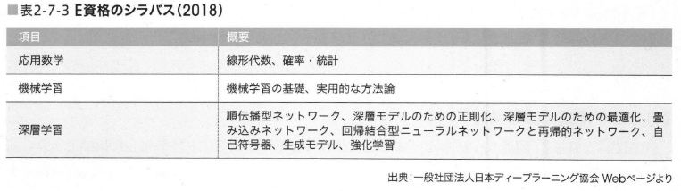
- 応用数学
- 線形代数、確率．統計
- 機械学習
- 機械学習の基礎、実用的な方法論
- 深層学習
- 順伝播型ネットワーク、深層モデルのための正則化、深層モデルのための最適化、畳み込みネットワーク、回帰結合型ニューラルネットワークと再帰的ネットワーク、自己符号器、生成モデル、強化学習
- 2.7.3 学校教育による人材育成
- 文部科学省では小学校からプログラム教育や大学での数理及びデータサイエンスなど、学校教育におけるIT活用能力の育成に注力している（図2-7-2)。
- 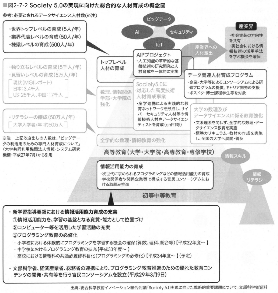
- (l)情報活用能力の育成
- 小学校段階でのプログラミング教育必修化(2020年度～ ）に向け、学校現場での楽しみながら学べるデジタル教材の活用・評価とさらなる改善等の産業界と教育現場が連携した取組みを2018年度秋から開始、2019年度から本格展開する。
- (2)大学の数理・テータサイエンスに係る教育強化
- 文部科学省では2016年12月、数理やデータサイエンス教育の強化に関する懇談会において大学の数理・データサイエンス教育強化方策を公表している（図2-7-3)。
- 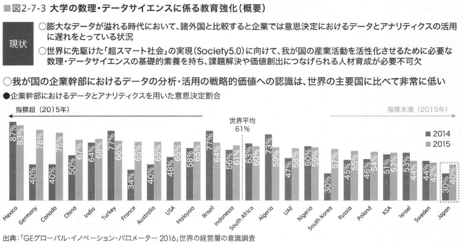
- 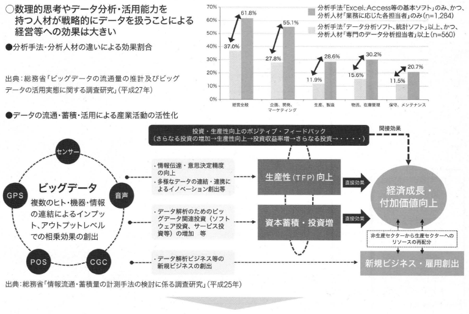
- 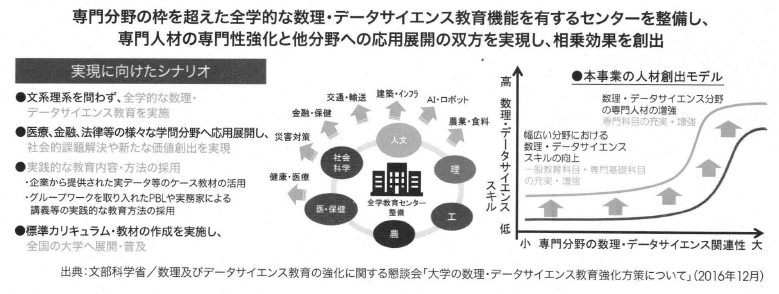
- これを受けて、2017年12月、北海道大学、東京大学、澄賀大学、京都大学、大阪大学、九小M大学の6校が拠点校として選定されている。また、当該6校により、数理・データサイエンス教育強化拠点コンソーシアムが設立されており、国際的なモデルとなる標準カリキュラム・教材の作成、他大学への普及方策などの検討が行われている※64
- 2.7.4 産学官連携による人材育成
- 産業界のニーズに応じた人材を大学で育成したり、産業界の即戦力を大学の場を活用して育成したりする文部科学省の施策
- (1)大学協議体と産業界による意見交換
- 大学協議体は、産業界のニーズを継続的に把握しつつ、産業界の代表との実務レベルでの情報共有等を行うことを目的として、「未来投資会議2017」にもとづいて国公私立大学の学部長等により組織された。
- ・教育機関側と産業界側それぞれに対する要望について、大学協議体と産業界の実務レベルによる意見交換
- ・産学協働による教育プログラムの構築・実施や調査等にもとづく政策提言の取りまとめ
- 2018年3月には、「産学連携による科学技術人材育成に関する大学協議体と産業界による意見交換（第1回）」が開催
- 「産業界のニーズと高等教育のマッチング方策」、「産学連携教育の推進」、「リカレント教育（技術者の継続教育）の推進」といった論点で議論
- 今後不足が見込まれるIT分野としてデータ・AI人材が挙げられる部分もあるが、現段階では基本的には枠組みの検討が中心である。
- この枠組みを通じて、AI・データ関連業界のニーズが大学側に伝われば、リカレント教育を含めた人材育成の推進が期待される。
- (2)専修学校による地域産業中核的人材養成事業
- 地域産業の発展を支える中核的な人材養成機関としての専修学校の役割の充実等を図るため、社会人向けの教育プログラムや特色ある教育カリキュラムの開発、効果的な産学連携教育の実施のためのガイドラインの作成、分野に応じた中長期的な人材育成に向けた協議体制の構築に係る事業の委託を行う制度である。
- 2017年度の採択テーマの中には、ビッグデータやAIも一部含まれている(2018年度事業は公募中） 。
- (3) Society5.0に対応した高度技術人材育成事業
- 産学連携による実践的な教育ネットワークを形成し、産業界のニーズに応じた人材を育成する取組みを支援する事業であり、2018年度は以下の2事業を公募。
- (a)超スマート社会の実現に向けたデータサイエンティスト育成事業
- 産学官による実践的な教育ネットワークを構築し、文系理系を問わず様々な分野ヘデータサイエンスの応用展開を図り、それぞれの分野でデータから価値を創出し、ビジネス課題や社会課題に答えを出す人材（データサイエンティスト）を育成する大学を支援する。
- (b)科学技術の社会実装教育エコシステム拠点の形成事業
- (4)データ関連人材育成プログラム
- 第4次産業革命を勝ち抜くうえで求められるAI、IoT、ビッグデータ、セキュリティ等を高度に駆使する人材（高度データ関連人材）について、発掘・育成・活躍促進を一貫して行う企業や大学等における取組みを支援することで、データ利活用社会のエコシステム構築への貢献を目指す。
- ・研究活動を通じて高度なデータの扱いに親しんだ博士課程学生や博士号取得者等を対象
- ・企業や大学等が人材の発掘・育成・活躍促進を目的としたコンソーシアムを形成
- ・インターンシップやPBL(課題解決型学習）等の実践的な研修プログラムを開発・実施
- 2.7.5 民間主導の人材確保・育成戦略
- (1)人材確保戦略
- 産業界におけるAI人材関連動向としては、社内にAI研究開発部門を設けて人材を集約したり、複数企業の共同で人材を含めたリソースを連携させたり、AI研究開発拠点を海外に設置することで国外のAI人材を活用したりする戦略が見られる。
- 国内の動向
- 「AI白書2017』では、大手企業におけるAI開発に関する人材確保や組織体制強化に関する動向を紹介しているが、この流れは現在も継続している。
- 例示
- 国外の動向
- AI開発に関する人材確保や組織体制強化については海外企業が先行している印象があるが、この1年においても国内外に研究所を設置し、AI研究者を確保しようという動きがみられる。
- 例示
- (2)人材育成戦略
- ・Alを活用した素材開発
- 2.7.6 学び直し、リカレント教育
- AI人材の不足を補うためには、既存の社会人のスキルチェンジも重要である。
- (1) リカレント教育
- 経済産業省では、「人生100年時代の社会人基礎力」として、社会人が学び直しを通じたアップデートや新たなスキルの獲得を継続することが必要不可欠として、基礎能力(OS)を身につけつつ業界特性等に応じた能力（アプリ）を新規獲得及びアップデートしていく必要性を提言している（図2-7-4)。
- 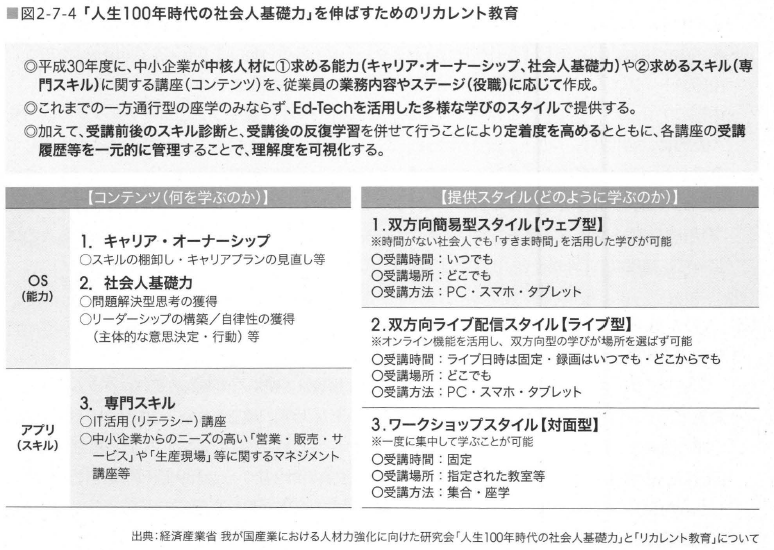
- ◎平成30年度に、中小企業が中核人材に①求める能力（キャリア・オーナーシップ、社会人基礎力）や②求めるスキル（専門スキル）に関する講座（コンテンツ）を、従業員の業務内容やステージ（役職）に応じて作成。
- ◎これまでの一方通行型の座学のみならず、Ed-Techを活用した多様な学びのスタイルで提供する。
- ◎加えて、受講前後のスキル診断と、受講後の反復学習を併せて行うことにより定着度を高めるとともに、各講座の受講履歴等を一元的に管理することで、理解度を可視化する。
- (2)第四次産業革命スキル習得講座認定制度
- 経済産業省は2017年7月に「第四次産業革命スキル習得講座認定制度」を創設している。
- 同制度は、IT・データを中心とした将来の成長が強く見込まれ、雇用創出に貢献する分野において、社会人が高度な専門性を身につけてキャリアアップを図る、専門的・実践的な教育訓練講座を経済産業大臣が認定する制度である。
- 厚生労働省が定める一定の要件を満たし、厚生労働大臣の指定を受けたものは、「専門実践教育訓練給付」の対象となる。本制度で対象となる分野は、AI、IoT、データサイエンス、クラウドの他、セキュリティなども含む。
- ■表2-7-4第四次産業革命スキル習得講座認定制度認定講座一覧(Al・テータサイエンス関連）
- (3) Al即戦力人材育成講座rAIテータフロンティアコース」(NEDO、東京大学／大阪大学）
- 国立研究開発法人新エネルギー・産業技術総合開発機構(NEDO)は2017年下期にAI即戦力人材の育成を目的に「AIデータフロンティアコース」を開講した。
- 同コースは、社会人技術者及び研究者を主な対象としており、2018年度から本格スタート、2019年度まで実施される。
- 本コースでは、講義でAI知識を体系的に習得するとともに、製造現場や顧客行動等の実社会における様々なデータセットを用いた演習を通じてデータの構築方法や解析手法など、半年間でAI技術を身につけることができる。
- 本コースの拠点は大阪大学と東京大学であるが、これらの拠点を中心に受講者参加型のシンポジウムやワークショップを開催することで、多方面の人材の交流を図るとともに、関連技術を含めたAI分野の新たな技術シーズの発掘や技術の応用•発展に資する取組みを行い、当該技術を担う人材が育っという「好循環」を事業終了後も継続的に形成することを目指している（表2-7-5)。
- ■表2-7-5NEDO/ Alデータフロンティアコース事業内容
- 2.7.7 ユーザー企業のリテラシー
- IPAが2017年度に実施したAI社会実装推進事業におけるアンケート調査では、ユーザー企業側の「AI導入検討上の課題」として「AIについての理解が不足している」が突出（図2-7-5)、AIベンダー側でも「ユーザー側のAIへの理解が不足している」が50%となっている。
- 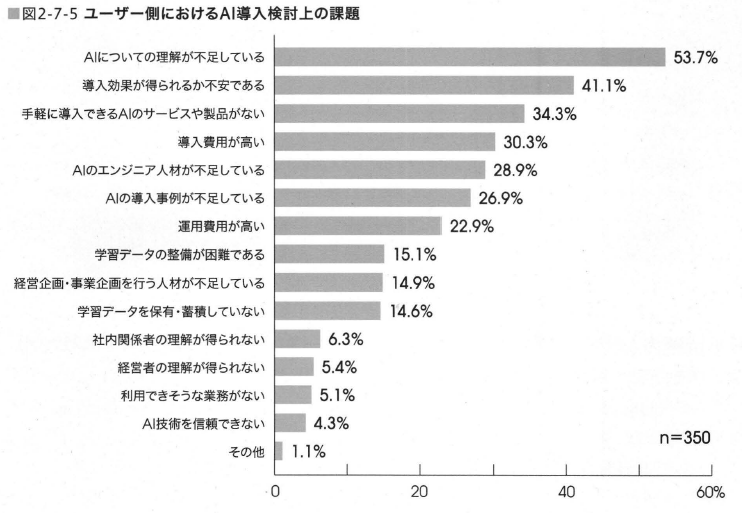
- 製造業やサービス業などの一般企業がAIを導入する場合、必要なAI開発については専門企業への委託等で対応可能であるが、
- AIで解決可能な現場の課題を洗い出したり、データの有無の確認や収集・蓄積を行ったりすることは、当該産業の特性や社内業務を熟知している企業内人材が行うほうが効率的である。
- この企業内人材が、AI開発の委託・協業先の技術者とスムーズに取組みを進めるためには、AI専門用語やAI手法の概略などの「AIリテラシー」を身につける必要がある（図2-7-6)。
- ■図2-7-6ユーザー企業内人材のAlリテラシーの必要性
- 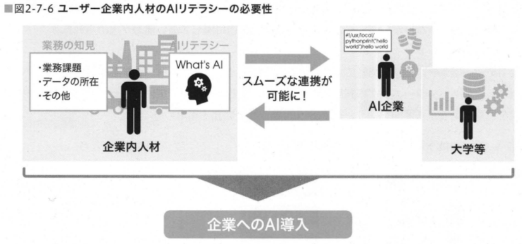
- しかしながら、社内業務を熟知している人材は企業内でも需要が高いため、AIリテラシーを身につけるための大学での学び直しやリカレント教育の時間確保は困難と想定される。
- 大企業では社内に講師を呼んで研修を行うケースも見られるが、中堅中小企業においては容易ではない。
- 平成30年6月に閣議決定された「統合イノベーション戦略」では、「AI技術」の目指すべき将来として「これからの「読み・書き• そろばん」であるAI技術を使いこなすITリテラシーを誰もが持ち、……」とあり、そのための初等中等教育でのITリテラシー教育が挙げられているが、現在のユーザー企業内人材のAIリテラシー習得も課題と想定される。
- なお、一般社団法人日本ディープラーニング協会が実施するビジネスサイドのAI人材育成を目指す「G検定」(2.7.2参照）の合格者アンケートでは、「人工知能関連の知識を体系的に整理できた」、「AIベンダーやエンジニアとの会話が成り立つようになった」、「AI関連の製品や展示会の内容がわかるようになった」などの意見があったとのことであり、ユーザー企業内人材のAIリテラシー向上がAI導入推進につながることが期待される。
- 2017年の合格者からは、実際に案件が立ち上げられた、ビジネスにつながったという声もあったという。
- ただし、「合格しても周囲でG検定を知っている人がいなかった」という意見も少なくないとのことであり、企業内人材の努力が適切に評価されるようAIに関する認定・検定制度の周知を図ることも必要と考えられる。
- 2.8 開発基盤
- はじめに
- AI、特にディープラーニング（深層学習）に代表される機械学習の利用においては、
- ①データから学習によってモデルを作成するフェーズ、
- ②学習後のモデルを用いて新たなデータに対し推論を行うフェーズ
- に分けられる。学習フェーズでは、大量のデータをメモリにロードし、反復しながら精度を高めていく計算が必要であるため、膨大な計算能力が要求される※75。
- 一方、推論フェーズでは、個々の入カデータに対し、比較的少数回の演算を行えば結果が得られることから、計算性能に対する要求は学習時ほど高くはないが、データの入出力や格納、転送に関して高い能力が求められる。
- ■図2-8-1 典型的なデイープラ＿ニングの開発・利用フロー
- 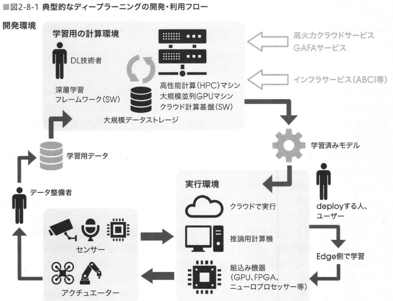
- データ整備者は、センサーからのデータ、アクチュエーターのデータを集めて、整形やアノテーション（正解ラベルの付与）を行い「学習用データ」を作成する。
- ディープラーニング技術者は、「学習用データ」に対して、学習フレームワーク(SW)やクラウド計算基盤(SW)を利用して、分析しながら学習用のプログラムを作成する。
- プログラムが完成したら、GPU等の学習に適切なハードウェア資源を潤沢に持ち並列計算に優れた高性能計算(HighPerformance Computing ;H PC)マシンを利用して学習モデルを作成する。この高性能計算機は、ローカルに整備してもよいし、クラウドサービスを活用したり、外部のインフラサービスを活用するなど複数の選択肢がある。
- 「学習モデル」ができると、ローカルの実行環境にモデルの適用(deploy)を行い、センサーデータを入力した推論を行って、結果を出力したり、アクチェーターを操作するなどのアクションを行う。
- 実行環境では、ローカルPCの利用、クラウド計算の活用などで推論を実行するが、組み込み機器に直接モデルを転送して、FPGA(Field Programmable Gate Array)やGPU(Graphics Processing Unit)を使って推論計算なども行う。
- また近年ではローカルの計算機環境の性能向上により、エッジ側で学習処理ができるようになる等の学習と実行を同一の環境で実行するような利用例もある。
- 学習フェーズにおいては
- 高性能計算が必要であり、ディープラーニングと相性のよいGPUを用いたいわゆる高速計算が簡単に利用できるようになったことが、近年のディープラーニングの発展につながっている。一方、HPCにおいては我が国には長い研究開発の蓄積がある。
- AIの研究開発や実用化に際して、HPC技術ベースのクラウド的な共有計算環境を整備していくことが、我が国における新たなプレイヤーの参入ハードルを下げ、AIの今後の普及を支える基盤の一つとなる。
- 一方、推論時には、
- 計算性能への要求よりもむしろ性能や性能／電力比への要求が高まる。特に、実用化の際には、推論の比重が高まる。そのため、クラウド・フォグ・エッジという階層構造の中で、ェッジ側に近づくほど、低消費電力、低メモリ、短レイテンシーに対する要求が高まり、機械学習に特化したFPGAや専用チップの開発が有利になる可能性がある。
- 2.8.1 基本原理
- (l)ティープラーニングで要求される演算の基本
- ①フィードフォワード計算（前向き計算）
- 1)全結合層
- 2)畳み込み層
- ②バックプロパゲーション計算（後ろ向き計算）
- ③ 並列化
- 1)大規模システムの背景と並列化
- 2)ティープラーニングの大規模並列化とその課題
- ●データ並列：
- ●モデル並列：
- 3)超並列化に向けた課題
- ●データ並列：
- ●モデル並列：
- ●非同期学習：
- (2)デイープラーニング向けプロセッサー技術の動向
- ①デイープラーニング向けGPU
- ②その他デイープラーニング向けプロセッサー
- 2.8.2 クラウド側基盤（ディープラーニング向け計算インフラストラクチャーの動向、ABCI）
- (1)ティープラーニング向け計算インフラストラクチャーの動向
- 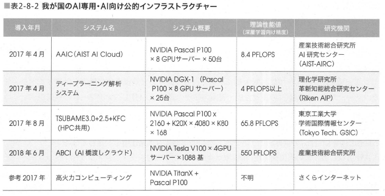
- (2) ABCI
- ① ABCIシステム
- ②高性能計算システム
- 1)計算ノード
- 2)計算ノードの冷却
- ③その他システム
- ④ ABCIのサービス設計・運用
- 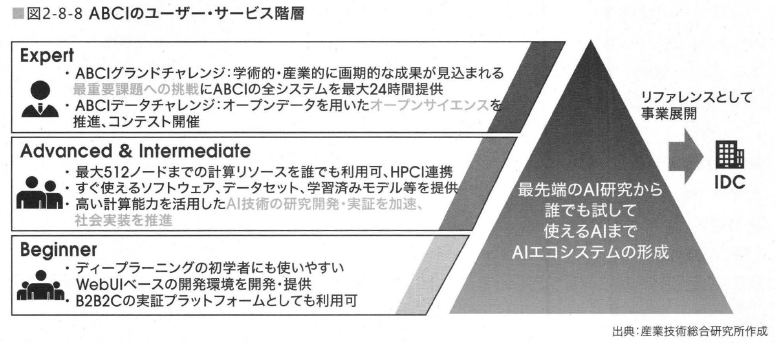
- ⑤ ABCIグランドチャレンジ
- 2.8.3 エッジ側基盤（推論用のプロセッサー技術と計算デバイスの動向）
- (1)各計算テバイスの特徴
- 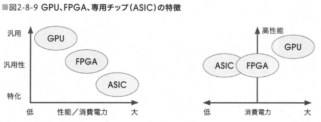
- 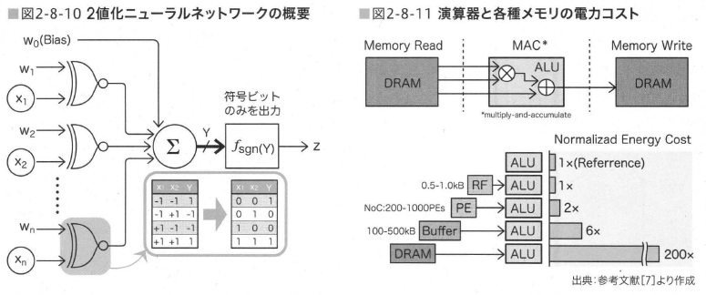
- (2)組込み型プロセッサー：推論の高速化・省エネルギー化
- ● SOCによる実現
- ● FPGAによる実現[9]
- ●専用チップ(ASIC)による実現
- ●機械学習用のプロセッサーIPによる実現
- 2.8.4 次世代AIインフラストラクチャー・ハードウェア
- (1) Alプロセッサーの分類
- 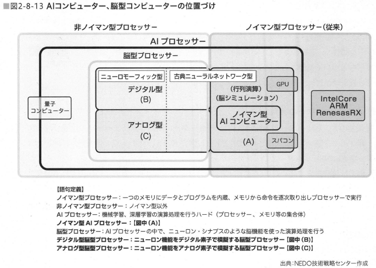
- 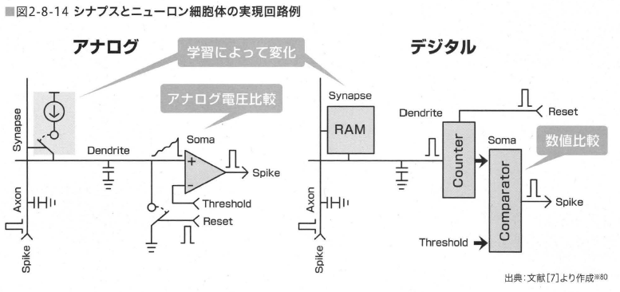
- (2)テジタル型のニューラルネットワークプロセッサー
- (3)アナログ型のニューラルネットワークプロセッサー
- (4)次世代ニューラルネットワークプロセッサーの方向性
- (5)脳に忠実なモデルと工学的に単純化したモデルとのバランス
- (6) Alコンピューターの今後の研究開発の方向性
- (7)量子計算機
- 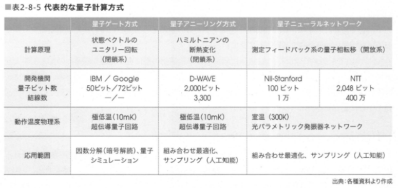
- 2.9 標準化・オープンプラットフォーム
- 2.9.1 標準化
- (l) 1S0/IEC JTC l/ SC 42 Artificial Intelligence
- (2) IEEE Global Initiative on Ethics of Autonomous and Intelligent Systems
- (3)その他の標準化活動
- 2.9.2 オープンソース
- 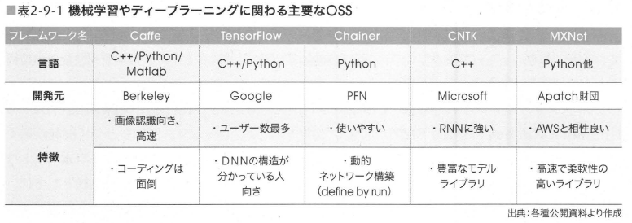
- 2.9.3 クラウドを利用したAIと開発環境
- (1) laaS型クラウドによるAl開発
- 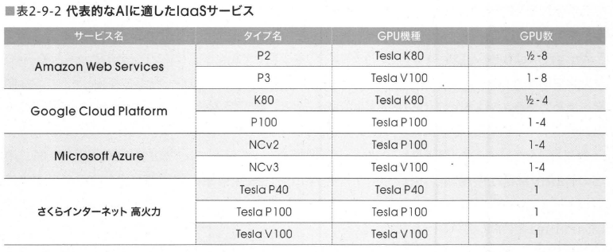
- (2) Saas型クラウドによるAl開発
- 2.9.4 共有データセット・共有モデル
- (1)共有データセット
- ①既存の共有データセット
- ②既存の共有データセットの課題
- (2)共有モテル
- ① 既存の学習済みモデル（ニューラルネットワークモデル）
- ②学習済みモデル間の相互運用性の問題
- 2.9.5 オープンプラットフォーム、エコシステム
- 2.10 各国の研究開発
- 2.10.1 各国の研究開発の現状
- はじめに
- 我が国では、
- 経済産業省、総務省、文部科学省にそれぞれ人工知能(ArtificialIntelligence ;AI)研究のためのセンター（産業技術総合研究所、情報通信研究機構、理化学研究所）があり、それぞれAI研究を推進するとともに、連携して研究開発に当たることとなっている。
- 民間企業でも、自動運転や生産ロボットなど一部の業界において本格的な研究開発に取り組み始めている状況である。
- 我が国のAIに関わる研究開発の今後の発展に向けて、アルゴリズムの基礎研究、応用研究をさらに振興するとともに、ロボティクスや計算用のデバイスなどものづくりの強みを活かした研究開発が有効と考えられる。
- 海外については、
- (1)各国の政策・プロジェクトの現状
- ① 我が国のAI研究開発政策
- 「第5期科学技術基本計画」※97(平成28年1月閣議決定）において、
- AIを「超スマート社会」を実現するための競争力向上のための基盤技術として位置づけ、その強化を推進することとなった。
- 超スマート社会とは、
- 「必要なもの・サービスを、必要な人に、必要な時に、必要なだけ提供し、社会の様々なニーズにきめ細かに対応でき、あらゆる人が質の高いサービスを受けられ、年齢、性別、地域、言語といった様々な違いを乗り越え、活き活きと快適に暮らすことのできる社会」である。
- ICTを最大限に活用し、サイバー空間とフィジカル空間（現実世界）とを融合させた取組みにより、人々に豊かさをもたらす「超スマート社会」を未来社会の姿として共有し、その実現に向けた一連の取組みをさらに深化させつつ「Society5.0」※98として強力に推進し、世界に先駆けて超スマート社会を実現していくこととした。
- 第5回「未来投資に向けた官民対話」（平成28年4月）において、
- 総理がAIの研究開発目標と産業化のロードマップを平成28年度中に策定することを表明した。
- それを受けて、AIの研究開発・イノベーション政策の司令塔となる「人工知能技術戦略会議」が平成28年4月に発足し、総務省、文部科学省、経済産業省の3省が連携してAI技術の研究開発と成果の社会実装の加速に当たることとなった。
- 人工知能技術戦略会議の下に、上記3省のそれぞれが所管するAI研究のためのセンター（情報通信研究機構： NICTく総務省＞、理化学研究所革新知能統合センター： API<文部科学省＞、産業技術総合研究所人工知能研究センター： AIRCく経済産業省＞）の研究の総合調整を行う場として研究連携会議を設置するとともに、人材育成、標準化・ロードマップ作成、技術・知財動向分析、規制改革等のテーマについて研究開発と産業の連携総合調整を図る産業連携会議を設置して議論を行っている※99。
- 平成29年3月には「人工知能技術戦略」※100を公表するとともに、「人工知能の研究開発目標と産業化のロードマップ」※101を策定した。
- ※ 101 人工知能技術戦略会議「人工知能の研究開発目標と産業化のロードマップ」新エネルギー・産業技術総合開発機構Webサイト<http://www.nedo.go.jp/content/100862412.pdf>
- この中では、「生産性」、「健康、医療・介護」、「空間の移動」の3分野及び横断的分野として「情報セキュリティ」が重点分野とされ、3センターが連携して研究開発に取り組むとともに、産学官が有するデータ及びツール群の環境整備を行い（表2-10-1)、さらに内閣府のSIP(戦略的イノベーションプログラム）を含め、厚生労働省、国土交通省、農林水産省など出口産業を所管する関係府省のプロジェクトと連携、人工知能技術の研究開発について民間投資を促進することとした。
- 「未来投資戦略2018-『Society5.0』『データ駆動型社会』への変革ー」（平成30年6月15日）において、
- 第4次産業革命の新たな技術革新として、AI、ロボット、IoT及び豊富なリアルデータの活用を挙げ、これらによる様々な社会課題の解決及び大きな付加価値の創造により「Soiety5.0」を実現するものとしている。
- ●表2-10-1センターの連携による研究開発テーマ
- 経済産業省の産業構造審議会産業技術環境分科会研究開発・イノベーション小委員会ではイノベーションを推進するための取組みについて議論が行われた。
- 平成28年5月に公表した中間とりまとめ※102では、AIを産業構造を一変させうる技術として位置づけ、国費による国家プロジェクトの研究成果の一部であるデータについて、オープンイノベーションによる利活用を促進するためのデータ戦略を検討することも重要とされた。
- 新エネルギー・産業技術総合開発機構(NewEnergy and Industrial Technology Development Organization; NEDO)では、平成27年度から「次世代人工知能・ロボット中核技術開発」をスタートし、次世代AI技術分野として①データ駆動型のAIと知識駆動型のAIの融合や計算論的神経科学の知見を取り入れた脳型AIを目指した研究開発、②様々な次世代AIのモジュール化と、それを統合するためのフレームワークの研究開発、③注力するタスクを設定し、研究成果の集約と連携のための標準的ベンチマークやデータセットの整備、⑦人工知能に関するグローバル研究拠点を活用する等による次世代人工知能の社会実装、⑧米国の卓越した研究者を招へいする等により人工知能技術開発を加速するための日米共同研究開発を実施している（表2-10-2)。
- また、革新的ロボット要素技術分野として④革新的なセンシング技術、⑤革新的なアクチュエーション技術、及び⑥革新的なロボットインテグレーション技術の研究開発を実施している（表2-10-3)。
- また、「IoT推進のための横断技術開発プロジェクト」では、アナログ型抵抗変化素子を用いた脳型推論集積システムの開発や、革新的アニーリングマシンの研究開発等を実施している※103。さらにAI技術の社会実装促進を目的とした「次世代人工知能・ロボット技術の中核となるインテグレート技術開発」及び「人工知能技術適用によるスマート社会の実現」を平成30年度から開始している。
- ■表2-10-2「次世代人工知能・ロポット中核技術開発」の次世代人工知能技術分野の研究開発項目
- ■表2-10-3「次世代人工知能・ロボット中核技術開発」の革新的ロボット要素技術分野の研究開発項目
- 経済産業省が所管する産業技術総合研究所では、平成27年5月に人工知能研究センター(Artificial Intelligence Research Center; AIRC)を設立した（表2-10-4)。
- 主要な目的基礎研究として、①人間の脳の情報処理原理に関する最新の神経科学の知見を包括的に取り入れた人間の脳に近い脳型AIと、②実世界の大量のデータにもとづくデータ駆動型のAIとWeb上の大規模な知識グラフなどにもとづく論理的・形式的な知識駆動型のAIの2つを融合して、大量かつ多様な実世界のデータを深く理解し、人間の意思決定を支援するデータ・知識融合型AIの研究を行うことを目標としている（図2-10-1)。
- ■表2-10-4 AIRCのチーム構成
- これらの目標のため、AIフレームワーク上で要素技術を統合した先進中核モジュールを実装して、製造業やサービス産業などの幅広い分野での産学連携による実サービスから得られる大規模なデータを使った実証研究、研究用データセットなど、AI技術の研究の基盤となるリソースを整備する。
- これを通じて、幅広い用途でのAI技術の有用性を提示し、産業競争力の強化と豊かな社会の実現に貢献することを目指している。
- 具体的には、「人工知能に関するグローバル研究拠点整備事業」※105では医療・介護現場、住環境、工場等の模擬環境の整備と個別分野のデータの収集・管理、解析、2次提供を行うデータ基盤の構築等を実施するオープンイノベーション・ハブ拠点を構築、「人工知能・IoTの研究開発加速のための環境整備事業」※106を実施した。
- ※105
- ※106
- また、深層学習の研究開発の基盤として構築した「AI橋渡しクラウド」 (AIBridging Cloud Infrastructure ;A BCI)は、 2018年8月より運用を開始した。世界のスパコン速度性能ランキングTOPSOOListの5位、世界のスパコンの省エネ性能ランキングGreen500 Listの8位を獲得している※107。
- ※107
- さらに、2018年5月に、日本が取り組むべき今後のAI基盤技術の方向について、①人間と協調できるAI、②実社会で信頼できるAI、③容易に構築できるAIを提案し、意見を募集した。
- ■図2-10-1AIRCにおける研究開発の取組み
- 総務省では、総務大臣の諮問機関である「情報通信審議会情報通信技術分科会技術戦略委員会」において、平成28年7月に「次世代人工知能推進戦略※109」を取りまとめた。
- ※ 709 「次世代人工知能推進戦略」総務省Webサイト<http://www.soumu.go.jp/main_content/000424360.pdf>
- 本戦略では、我が国で注力していくべき研究開発分野として、8個のテーマが掲げられている（表2-10-5)。
- ●表2-10-5「次世代人工知能推進戦略」の研究開発テーマ
- 総務省所管の情報通信研究機構(NICT)では、脳情報通信、音声認識、多言語音声翻訳、社会知解析、革新的ネットワーク技術等の研究開発をかねてより進めている。
- 例えば、高度言語情報統合フォーラム(ALAGIN)※110では、自然言語処理の研究に資する言語資源• 音声資源の整備を実施している。
- また、脳情報通信融合研究センターでは、システム神経科学、情報通信技術、ブレインマシンインターフェース、ニューロイメージング技術やロボット工学の研究を実施している。
- さらに、先進的音声翻訳研究開発推進センターでは、東京オリンピック・パラリンピック競技大会が開催される2020年までに、国内の鉄道などの交通機関やショッピング施設、観光地、医療の現場などで活用される実用性の高い多言語音声翻訳技術や、企業などにおいて他国の特許を自動で翻訳できる多言語テキスト翻訳技術などを開発※111するとともに、自動翻訳システムの様々な分野への対応や高精度化を進めるため、オールジャパン体制で翻訳データを集積する「翻訳バンク」の運用を開始した※112。
- 次世代人工知能推進戦略では、このようなNICTがこれまで整備を進めてきた言語情報データや脳情報モデルを基盤として、全国規模で利用可能とする「最先端AIデータテストベッド」の整備、脳機能に学び知能を理解・創造する次世代AI技術の研究開発、IoT/ビッグデータ/AI情報通信プラットフォームの開発等を推進することとしている。
- 文部科学省は「人工知能／ビッグデータ/IoT/サイバーセキュリティ統合プロジェクト」(Advanced Integrated Intelligence Platform Project ;AIPプロジェクト） ※113 を推進しており、その研究開発拠点として、理化学研究所に革新知能統合研究センター(AIP)を平成28年4月に設置した。
- 当センターでは、世界最先端の研究者を糾合し、革新的な基盤技術の研究開発や我が国の強みであるビッグデータを活用した研究開発を推進することとし、具体的には表2-10-6に掲げた3つの領域で研究開発を実施することとしている。
- 文部科学省は「人工知能／ビッグデータ/IoT/サイバーセキュリティ統合プロジェクト」(Advanced Integrated Intelligence Platform Project ;A IPプロジェクト） ※113 を推進しており、その研究開発拠点として、理化学研究所に革新知能統合研究センター(AIP)を平成28年4月に設置した。
- 当センターでは、世界最先端の研究者を糾合し、革新的な基盤技術の研究開発や我が国の強みであるビッグデータを活用した研究開発を推進することとし、具体的には表2-10-6に掲げた3つの領域で研究開発を実施することとしている。
- ■表2-10-6AIPプロジェクトにおける研究領域
- 2017年4月、AIPは、研究開発成果の実用化加速のために官業界等との連携を強化するため、東芝、NEC、富士通の3社各々との連携センターを開設し（設置期間は2022年3月31日まで）、各社が携わるソリューションを対象に、次世代人工知能基盤技術の開発から社会実装までの一貫した研究を担うこととした（表2-10-7)。
- ■表2-10-7理研AIP連携センターの研究課題
- 科学技術振興機構(JapanScience and Technology Agency; JST)では、戦略的創造研究推進事業（新技術シーズ創出）において、AIPプロジェクトに関連する研究領域をネットワークラボとして束ね、これをAIPと一体的に運営している（表2-10-8)。
- ■表2-10-8ネットワークラボの構成領域
- 国立情報学研究所(NII)は、「AIが人間に取って代わる可能性がある分野は何か」といった問題を考える際の指標になりうるAIの客観的なベンチマークを指し示すことを目的として、大学入試問題をAIが解くことに挑戦した「ロボットは東大に入れるか」プロジェクトを、他機関のグループとともに2011年から推進した。
- 2016年にはセンター試験模試で5教科8科目の合計で525点を獲得、偏差値は57.1に達し、国公立23大学、私立512大学で合格可能性80%以上との判定を得た※116。
- NIIは、2017年11月に、AIをはじめネットワーク、クラウド、セキュリティなどの最先端情報技術の活用により医療分野の課題解決を推進するため「医療ビッグデータ研究センター」を設置した※117。
- 本センターを基盤として、NIIが構築・運用する学術情報ネットワーク「SINET5」※118を活用した医療画像ビッグデータのクラウド基盤の構築、AIによる医療画像解析の研究開発、匿名化した医療画像の収集に学会※119の協力を得つつ取り組むとしている（図2-10-2)。
- ■図2-10-2医療画像ピッグテータクラウド基盤のイメージ
- ②米国における国防高等研究計画局(DARPA)関連プロジェクト
- ③カナダにおけるAI政策とAIエコシステム
- (2)民間企業の研究開発の現状
- はじめに
- 追加ポイント
- ①我が国の民間企業における研究開発動向
- 我が国の民間企業においては、特にディープラーニングに対する取組みについて現状では米国の情報系企業を中心とする取組みに比ベスタートが遅れたことは否めない。
- そもそも国内のAI関連の人材は不足しており(「2.7.1 AI人材育成の全体イメージ」参照）、大手企業は米国への投資や直接研究所を開設することで研究開発を進めている事例が見られる。
- 例えば、ToyotaResearch Institute (米国）は、シリコンバレーに研究所を開設し、スタンフォード大学等との共同研究を実施している。
- また、リクルートホールディングスは、データ分析の自動化技術を開発しているDataRobot (米国）に、トヨタ自動車及びファナックはPreferredNetworksに、ソフトバンクはFlipkart(印）、Fanatics(米）等に、NVIDIAはABEJA等に、各々出資している。
- NTTグループは、AI関連技術群の総称としてcorevoをブランド名としたサービスを展開している。
- corevoを構成するAI技術は、人の発する情報を捉えて意図・感情を理解するAgent-AI（コンタクトセンターや高齢者支援）、心身を読み書き深層心理・知性• 本能を理解するHeart-Touching-AI (スポーツ上達やメンタルウェルネス）、人・モノ・環境を読み書き、瞬時に予測・制御するAmbient-AI(運転支援や災害予測・復旧）、複数のAIがつながり社会システム全体を最適化するNetwork-AI(ネットワークの故障予知や社会最適化）の4種からなる※128※129。
- 他の特許出願数上位企業としてNEC、富士通、東芝が挙げられ、既存サービスにAI技術を導入した製品展開がなされている。
- NECは、デジタルトランスフォーメーションを加速する最先端AI技術「NECthe WISE」を展開している※130。
- 富士通は、AIを活用したサービスZinraiを展開しており※131、また、物質の構造など実世界のデータの関係（グラフ構造）を直接学習する「DeepTensor」と学術論文など世界中に存在する膨大な知識を構造化したナレッジグラフを組み合わせてAIが行った判断結果にいたる根拠を提示する技術を開発した※132。
- 東芝は、製造現場等に適用するAI技術SATLYSと人と人のコミュニケーションをサポートするAI技術RECAIUSを展開している※133。
- Preferred Networksは、Preferred Infrastructureからスピンアウトして設立されたスタートアップ企業であり、リアルタイム機械学習技術をIoT領域に適用している。
- 事例として、交通シスデム(2014年10月からトヨタ自動車と共同研究）、製造業(2015年6月からファナックと、2017年12月から日立製作所と共同研究）、バイオヘルスケア(2017年12月から国立がん研究センター棟と共同研究）を重点事業領域としている。
- 同社はニューラルネットワークのフレームワークChainerを公開しているのに加え、海外学会においても積極的に発表を行っており、高く評価されている。
- LeepMindは、企業向けにディープラーニングエッジソフトウェア開発を行い、また、深層学習を実装したエッジデバイスの技術開発を行っている。
- 2017年6月に日本ディープラーニング協会※134が設立され、ディープラーニングについて、①産業活動の促進、②公的機関や産業界への提言活動、人材育成、国際連携活動、社会との対話、等の活動を行っていくとしている。
- 同協会は、ディープラーニングに関する知識普及と人材育成のため、ジェネラリスト向けのG検定及びエンジニア向けのE検定の2種類の資格試験を実施している(「2.7.2スキル標準／認定・検定制度」参照） 。
- 我が国では、昨今のAIの興隆への対応は少し遅れたものの、今後に関しては、AI及び脳科学等関連諸科学のアカデミックの研究者層の厚みを背景とした産官学連携の推進、リアル空間のデータを持つ製造業の強みを利用したビジネス開発など、既存の強みを活かした戦略が期待される。
- ②米国の民間企業における研究開発動向
- ③欧州の民間企業における研究開発動向
- ④中国の民間企業における研究開発動向
- (3)特許・論文の動向
- ① 特許動向
- ②論文動向
- ③研究拠点
- ④国際会議からみた技術動向
- 2.10.2 グランドチャレンジ
- (1)総論
- 2.11 今後の展望
- 【column01】AIによるクリエイティブの可能性／川上量生
- 【column02】機械学習工学／丸山宏
- 【column03】構成的計算神経科学／浅田稔